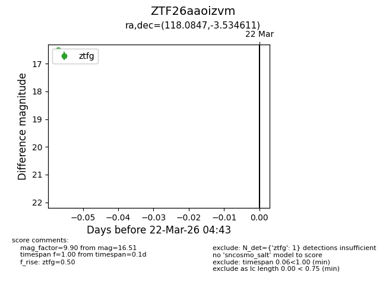
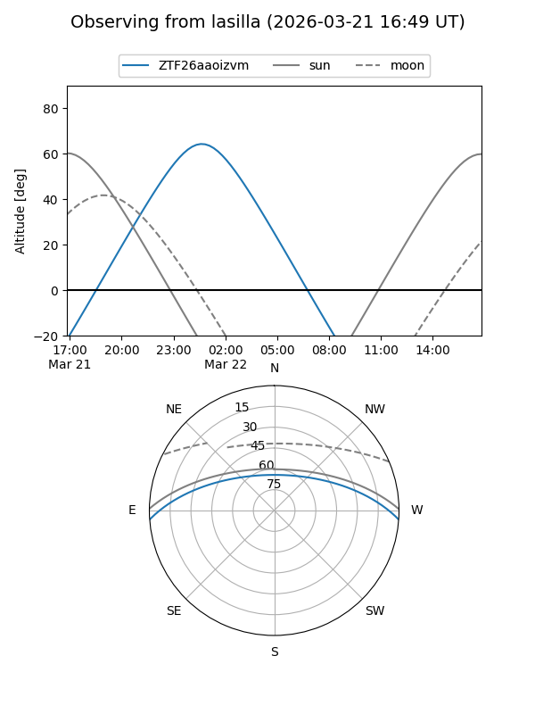
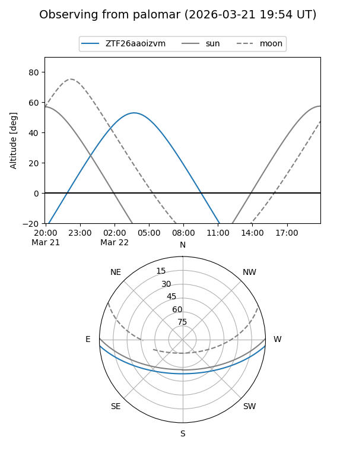

ZTF26aaoizvm
Target ZTF26aaoizvm at 2026-03-22 04:45
Aliases and brokers:
FINK: link
Lasair: link
ALeRCE: link
alt names
ZTF26aaoizvm (ztf,fink_ztf)
Coordinates:
equatorial (ra, dec) = 118.0847,-3.53461
equatorial (HMS+DMS) = 07:52:20.34,-03:32:04.60
galactic (l, b) = (223.1957,+11.83928)
Flags:
Photometry:
last ztfg=16.51
1 ztfg detections
Lightcurve

Visibility


Additional plots